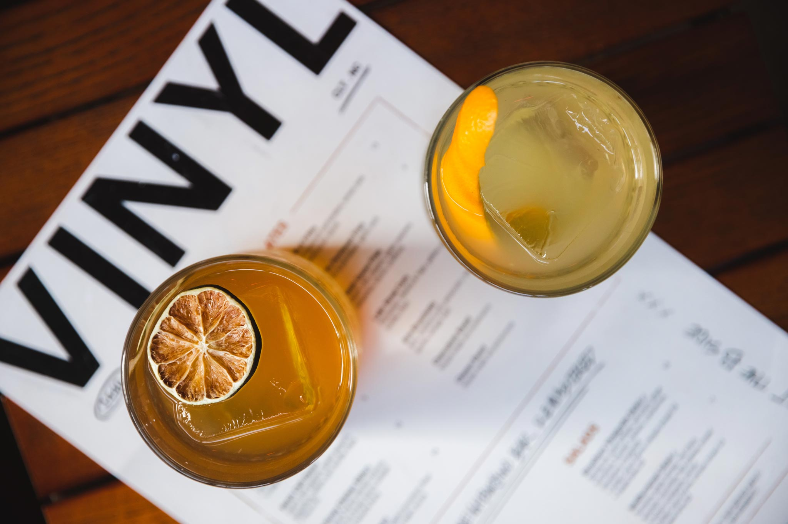

Fat-Washing & Infusions
From Wagyu fat-washed bourbon in "Tearz" to Danish Danablu cheese-washed gin in our savory "Blue Monday" martini, our bar team pushes creative boundaries without losing approachable drinkability.
At VINYL, great hospitality is calibrated to the sound of music. As a proud United States Bartenders’ Guild Founding Guildhouse, we unite an award-nominated craft cocktail program with nightly resident DJs who spin deep cuts and nostalgic anthems every single evening.

Uncompromising technique, custom infusions, and intentional hospitality.
From Wagyu fat-washed bourbon in "Tearz" to Danish Danablu cheese-washed gin in our savory "Blue Monday" martini, our bar team pushes creative boundaries without losing approachable drinkability.
Whether partaking in Dry January or living spirit-free, our Rehab Ready non-alcoholic libations and Parental Advisory cannabis cocktails deliver sophisticated complexity without compromise.
Music Director Justin Aswell crafts the sonic identity of VINYL with seamless transitions from afternoon soulful funk and golden-era hip-hop to energetic late-night weekend grooves.
At VINYL, there are no sterile streaming algorithms. Our dedicated DJ booth hosts Charlotte's most talented producers and turntablists every night of the week starting at 8:00 PM, and from afternoon until late night on Saturdays and Sundays. Look up at our vintage split flap board to see current songs and special cuts clicking overhead.
Join Us This Evening →